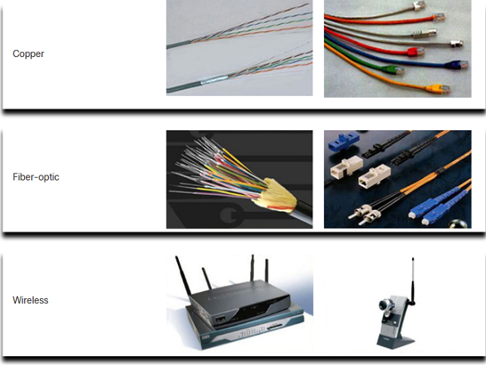
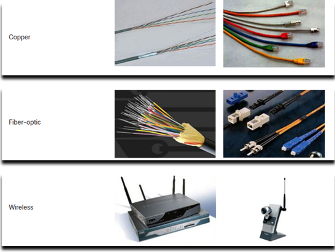

Cada computadora en una red se llama host o dispositivo final. Los servidores son computadoras que proporcionan información a dispositivos finales:
*Servidores de correo electrónico.
*Servidores web.
*Servidores de archivos.
Los clientes son equipos que envían solicitudes a los servidores para recuperar información
*Página web desde un servidor web.
*Correo electrónico desde un servidor de correo electrónico.

Es posible que un dispositivo sea un cliente y un servidor en una red Punto a Punto. Este tipo de diseño de red solo se recomienda para redes muy pequeñas.


Un terminal es el punto donde un mensaje se origina o se recibe. Los datos se originan con un dispositivo final, fluyen por la red y llegan a un dispositivo final.

Un dispositivo intermediario interconecta dispositivos finales. Los ejemplos incluyen switches, puntos de acceso inalámbrico, routers y firewalls.La gestión de los datos a medida que fluyen a través de una red también es la función de un dispositivo intermediario, que incluye:
*Volver a generar y transmitir las señales de datos.
*Mantener información sobre qué vías existen en la red.
*Notificar a otros dispositivos los errores y las fallas de comunicación.

La comunicación a través de una red se efectúa a través de un medio que permite que un mensaje viaje desde el origen hacia el destino.
 

Los diagramas de red, con frecuencia, denominados diagramas de topología, utilizan símbolos para representar los dispositivos dentro de la red.Los términos importantes a conocer incluyen:
*Tarjeta de interfaz de red (NIC)
*Puerto físico
*Interfaz

Los diagramas de topología física ilustran la ubicación física de los dispositivos intermedios

Los diagramas de topología lógica ilustran dispositivos, puertos y el esquema de direccionamiento de la red.

*Las redes domésticas pequeñas conectan algunas computadoras entre sí y con Internet
*Las oficinas pequeñas y las oficinas en el hogar permiten que una computadora dentro de una oficina en el hogar o una oficina remota se conecte a una red corporativa.
*Las redes medianas a grandes incluyen muchos lugares con cientos o miles de computadoras interconectadas.
*Redes mundiales: conecta cientos de millones de computadoras en todo el mundo, como Internet
Es la interfaz de usuario que permite a los usuario solicitar tareas especificas del equipo y ademas se hacen con CLI o GUI
Establece la comunicacion entre hardware y software de una computadora, y administra el uso de los recursos de hardware que requiere software
Es la parte fisica de una computadora
Interracion: Permite al usuario interactuar con el sistema mediante iconos y ventanas.
Facilidad: Es mas facil de usar y requiere de menos conocimiento de comandos.
Sistemas: Windows, macOS, Linux KDE, iOS y Android.
Proposito de OSEl proposito del OS, es que se pueda llegar a tener un control para el manejo del sistema u otras cosas, como el teclado y mouse.
Puerto de adminstracion fisica usada para acceder a un dispositivo y proporcionar mantenimiento.
Establece una conexion CLI remota segura a un dispositivo, a travez de una interfaz virtual, a traves de una red.
Establece una conexion CLI remota insegura a un dispositivo a travex de red.
Se usan para conectar un dispositivo de red con puerto de consola o conexion SSH/TelNet.
Tipos de programas: PuTTY, Tera Term y SecureCRT.
Permite una cantidad pequeña de comandos de monitoreo y sale con >.
Permite comandos y funciones, y finaliza con #.
Exec privilegiado, configuracion global, configuracion de linea.
En caso de salir de esos modos de esa exit.
Un parametro especifico que se define en el sistema operativo
Es un valor o variable definida por el usuario
La contraseña no debe de ser de menor de 8 caracteres, y debe tener letras, numeros y signos.
Es el principal medio por donde se permite que los dispositivos se ubiquen entre si y se establezcan comunicacion completa.
Dependen de interfaces de dispositivos de red.
Trenzado, fibra optica, coaxiales y inalambrica.
Varian en distancia de transmision, instalacion, velocidad de datos y costos.